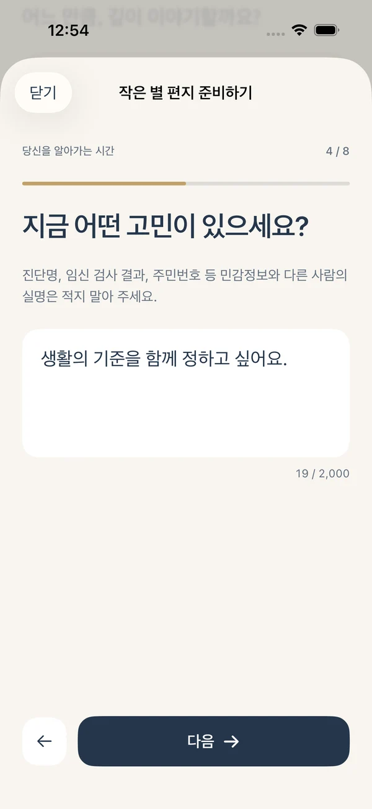
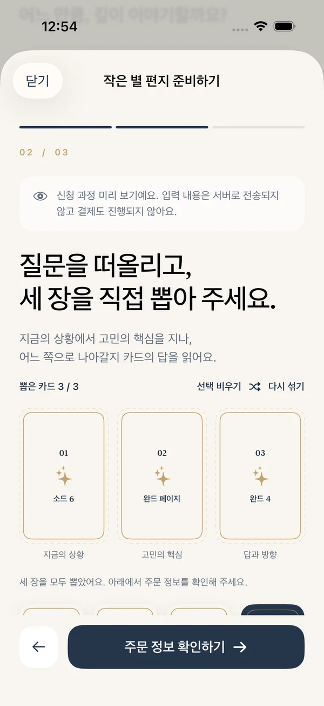
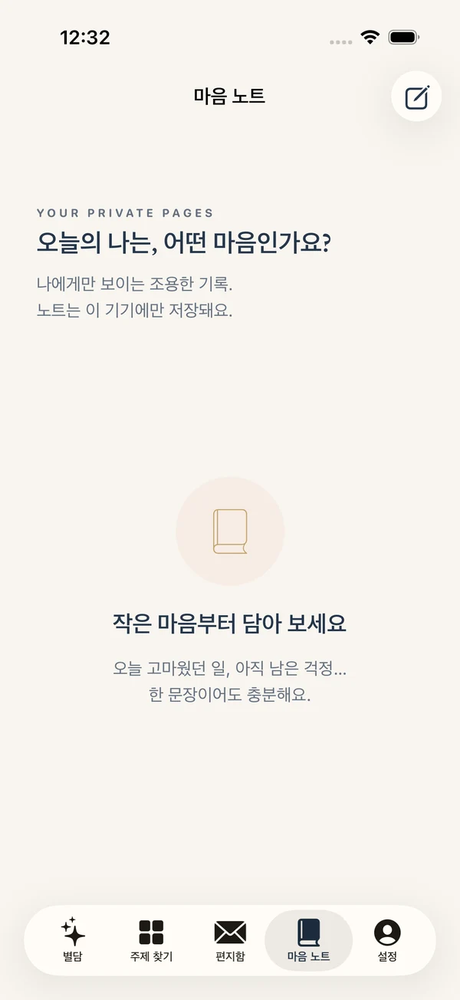

01 / LOVE
다시 설레고 싶은 나
새로운 관계 앞에서 내 마음을 읽어요.
말로 다 꺼내지 못한 마음도 괜찮아요.
당신이 고른 세 장의 카드와 하나의 질문이
나를 위한 다정하고 분명한 이야기가 됩니다.
App Store 심사 대기 중 · 승인 후 출시 예정

“그래서 나는 어떻게 하면 좋을까?”
별담은 카드의 상징과 당신의 상황을 연결해, 고민의 답부터 읽고
그 이유와 선택의 기준, 지금 할 수 있는 작은 행동까지 살펴보게 해요.
삶의 큰 갈림길부터 작은 일상의 고민까지.
14가지 카테고리, 70가지 주제 중
지금의 나에게 가까운 이야기를 찾아요.
새로운 관계 앞에서 내 마음을 읽어요.

일에서 지친 나를 위한 회복의 단서.

떠날지, 남을지 나만의 기준을 찾아요.

다시 손을 내밀기 전 마음을 정리해요.

요즘의 나를 조금 더 이해하는 시간.

선택 앞에서 흔들리는 기준을 살펴요.
건강 상태, 임신 결과나 투자 수익을 예측하는 서비스가 아닙니다.
카드가 섞이는 순간, 지금의 질문을 떠올려 보세요.
직접 고른 세 장으로 지금의 상황, 고민의 핵심,
답과 방향을 차례로 살펴봅니다.
오른쪽 카드를 눌러 별담의 분위기를 만나 보세요.
세 장을 하나씩 눌러 펼쳐 보세요.
복잡한 시작 없이, 한 단계씩.
주문부터 PDF 보관까지 이렇게 이어져요.
지금 나에게 필요한 이야기를 찾고, 질문을 한 화면씩 차분하게 적어요.
섞이는 카드 중 마음이 가는 세 장을 직접 고르며 고민을 떠올려요.
앱 내 구입을 마친 뒤, 주문 메일을 열어 iPhone Mail에서 직접 전송해요.
운영자가 주문을 실제 수신한 뒤 6시간 이내, 제작·검토한 PDF를 메일로 보내요.
마음을 모두 짐작하려 하기보다, 내가 원하는 관계와 확인하고 싶은 한 가지를 정리해 보세요. 다음 선택은 그 대화 이후에 해도 괜찮아요.
길게 펼쳐진 문장 속에서 답을 찾지 않아도 돼요.
고민에 대한 제안을 먼저 읽고,
세 장의 근거와 나에게 맞는 행동으로 이어져요.
가상의 상황으로 만든 SAMPLE입니다. 실제 주문 결과는 입력과 카드에 따라 달라집니다.
한꺼번에 답하지 않아도 괜찮아요.
입력부터 카드 선택, 기록까지
당신의 속도로 이어지는 앱.

뒤로 가도 입력한 내용은 유지돼요.

카드가 섞이고 선택한 카드가 펼쳐져요.

마음 노트에 오늘의 생각을 남겨요.
필요할 때 한 편씩 구매해요.
정기 구독 없이 선택하는 두 가지 리딩.
하나의 고민을 다정하고 분명하게.
앱에서 선택 · 주문 메일 접수 후 6시간 이내 전달
선택의 이유와 다음 행동을 더 깊이.
앱에서 선택 · 주문 메일 접수 후 6시간 이내 전달
한국 App Store 기준 가격입니다. 국가별 통화·세금에 따라 달라지며, 실제 결제 금액은 구매 화면에서 확인하세요. 앱은 무료 다운로드 예정이며 PDF 리딩은 별도 앱 내 구입입니다.
마음 노트에 생각을 남기고, 메일로 받은 PDF는
앱의 편지함에 가져와 나만의 기록으로 보관해요.
리딩을 읽고 떠오른 생각과 작은 변화를 기록해요.
Files에 저장한 PDF를 해당 주문에 가져와 다시 읽어요.
기록은 기기에 보관됩니다. 기기 변경·앱 재설치 시 자동 복원되지 않으니 받은 메일과 PDF를 별도로 보관해 주세요.

앱과 PDF 리딩은 한국어·영어·일본어·중국어 간체를 지원합니다.
주문 전에 앱 설정에서 언어를 선택해 주세요.
현재 App Store 심사 대기 중으로 아직 정식 공개 전입니다. 승인 후 출시 예정이며 아래 버튼에서 App Store 공개 여부를 확인할 수 있어요.
아니요. 구매 후 앱에서 주문 메일을 열고 iPhone Mail의 보내기를 직접 눌러야 합니다. 메일 전송 결과와 실제 접수는 다르니 접수 확인 답장을 확인해 주세요. 전송을 취소하거나 실패하면 같은 주문에서 추가 구매 없이 다시 보낼 수 있어요.
운영자가 주문 메일을 실제 수신한 시점부터 6시간 이내 제작·검토한 PDF를 이메일로 회신합니다. 작은 별 편지는 10쪽, 깊은 별 이야기는 25쪽이에요. AI를 활용한 수동 제작이며 실시간 상담은 아닙니다.
카드의 상징과 입력한 상황을 바탕으로 고민을 살펴보고 행동 방향을 제안합니다. 미래의 사실이나 타인의 생각을 확정하지 않으며 의료·법률·투자 등 전문 판단을 대신하지 않아요.
마음 노트·주문·가져온 PDF는 현재 기기에 보관되며 자동 동기화와 다른 기기로의 자동 복원은 지원하지 않습니다. 메일과 PDF를 별도로 보관하고, 구매·주문 문제가 있으면 재구매 전에 주문 번호로 문의해 주세요.
한국어·영어·일본어·중국어 간체를 지원합니다. 주문 전에 설정에서 언어를 선택하고 주문 확인 화면에서 PDF 언어를 확인해 주세요. 나중에 앱 언어를 바꿔도 이미 만든 주문의 PDF 언어는 유지됩니다.
주문 번호와 상품명, 문제 발생 시점을 고객지원으로 알려 주세요. Apple 환불은 reportaproblem.apple.com에서 요청할 수 있으며 Apple이 심사하고 처리합니다. 비밀번호나 카드 번호는 보내지 마세요.
카드 세 장과 나를 위한 한 통의 이야기.
별담을 iPhone에서 만나 보세요.
현재 심사 대기 중입니다. 아직 다운로드가 제공되지 않을 수 있으며, 승인 후 App Store에서 이용할 수 있습니다. 서비스 이용은 만 19세 이상을 대상으로 합니다.